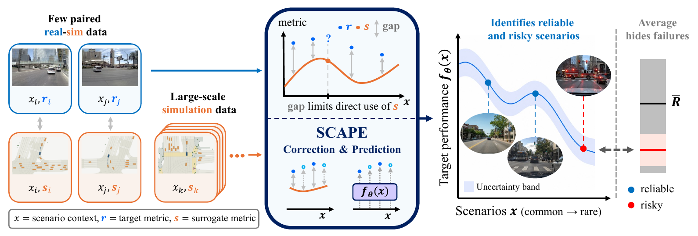
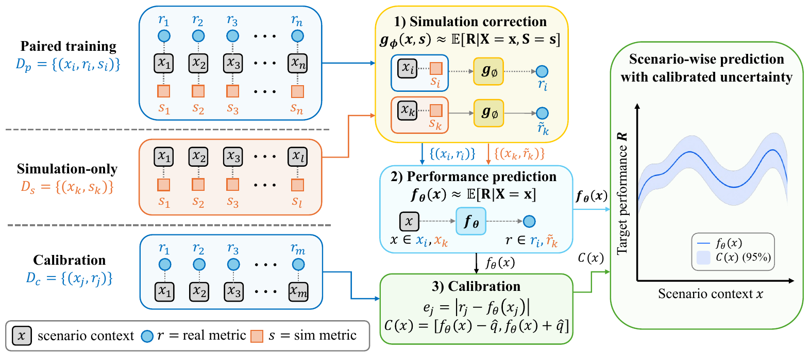
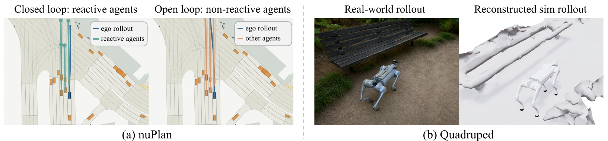
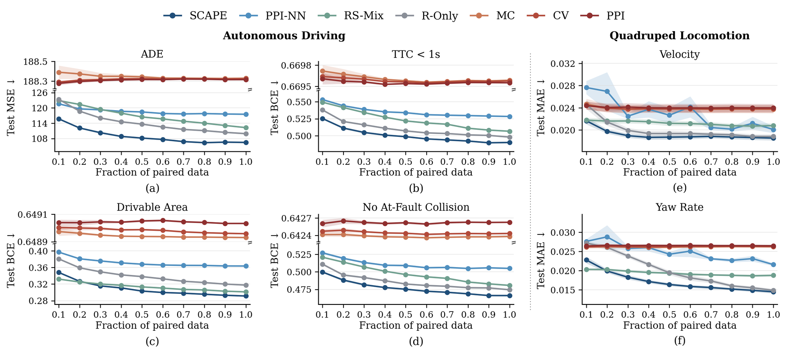
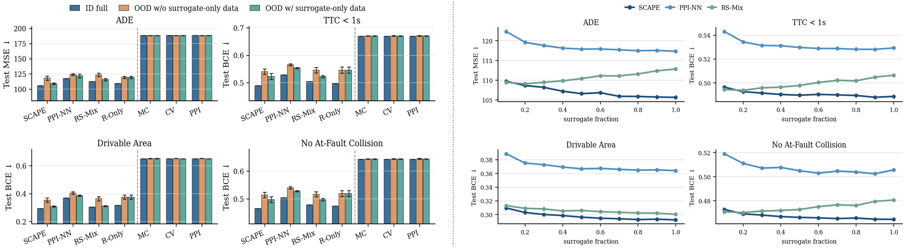
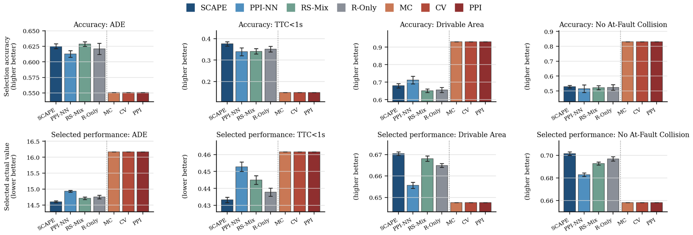

Abstract
Reliable performance evaluation is a central bottleneck for deploying robot-learning policies in real-world conditions. Real-world testing produces faithful evaluation but is costly and difficult to scale, whereas simulation-based testing is easy to scale but inevitably biased due to the sim-to-real gap. Neither source alone is sufficient for scalable and reliable policy evaluation. This motivates simulation-augmented policy evaluation, which combines limited real-world rollouts with abundant simulation proxies for sample-efficient performance estimation. Yet, existing methods focus on estimating performance averaged over initial conditions and deployment settings. By construction, such population-level averages collapse scenario-specific variation, providing limited information about when and where a policy can be safely deployed.
To address this limitation, we propose SCAPE, a scenario-conditioned simulation-augmented policy evaluation framework that instead predicts scenario-conditioned real-world policy performance from limited paired sim-and-real evaluation samples and large-scale simulation-based testing rollouts. SCAPE corrects the sim-to-real bias in the simulation labels before using them to train the prediction model, and calibrates the prediction uncertainty through conformal prediction. We validate SCAPE on two embodied task domains, autonomous driving and quadruped velocity tracking. In sim-to-sim settings, it reduces the scenario-level performance prediction error by 4.9%/34.7% (driving) and 14.5%/27.7% (quadruped) relative to scene-conditioned neural baselines and aggregate statistical baselines on average. We also validate SCAPE for evaluating a velocity-tracking policy deployed on a physical Unitree Go2. In addition, SCAPE improves testing sample-efficiency, produces narrower calibrated prediction intervals, enhances generalization to out-of-distribution scenarios, and unlocks fine-grained deployment strategies.
Method
SCAPE adopts a correction-before-augmentation principle. Instead of naively mixing faithful real-world labels with biased simulation labels, it first learns how simulation outcomes relate to real-world outcomes from a small paired set, uses this to debias abundant simulation-only rollouts, and then trains a scenario-conditioned performance predictor that needs no simulator at deployment.

A correction model gφ(x, s) ≈ E[R | X=x, S=s] is trained on paired data and converts every simulation-only rollout into a corrected real-world label.
A scenario-conditioned predictor fθ(x) ≈ E[R | X=x] is trained on real labels plus corrected simulation labels, using the scenario context alone.
Split conformal prediction on a held-out set wraps each prediction in an interval with finite-sample marginal coverage, supporting certify, reject, or test-further decisions.
Experimental Domains
We evaluate SCAPE on autonomous driving with three nuPlan planners (Urban Driver, Vector, Simple Vector), where the surrogate comes from open-loop evaluation with non-reactive agents and the target from closed-loop evaluation with reactive agents, and on quadruped velocity tracking, in both Sim2Sim and Sim2Real with a physical Unitree Go2, where paired real-sim scenes are reconstructed with a real-to-sim pipeline.

Results
Scenario-level prediction across paired-data budgets
SCAPE is the only surrogate-augmented method that consistently improves on R-Only across paired-data fractions and metrics, while naive mixing (RS-Mix) and neural PPI (PPI-NN) often fail to benefit from biased simulation labels.

Sim2Real on a physical Unitree Go2
On real-world rollouts, SCAPE achieves the lowest error on both targets, reducing error by 11.3% on velocity and 8.7% on yaw-rate tracking compared with the strongest baseline.
| Test MAE (×10−3) | MC | CV | PPI | R-Only | RS-Mix | PPI-NN | SCAPE |
|---|---|---|---|---|---|---|---|
| Velocity | 16.55±0.96 | 17.07±0.86 | 26.51±1.52 | 13.29±0.76 | 16.92±0.99 | 19.16±1.79 | 11.79±0.70 |
| Yaw rate | 5.24±0.41 | 5.48±0.41 | 6.86±0.56 | 5.16±0.41 | 6.22±0.47 | 5.37±0.45 | 4.71±0.32 |
Surrogate scaling and out-of-distribution generalization
SCAPE keeps improving as more cheap surrogate data is added, whereas RS-Mix degrades. When a city is held out from paired training, adding surrogate-only data from that city reduces SCAPE's loss by 4.8% and recovers 95.3% of full-training performance, without any target labels from the held-out city.

Scenario-conditioned deployment
Used as a router that selects the predicted best planner per scenario, SCAPE achieves the best selected performance on all four metrics, improving over scenario-conditioned and aggregate-mean baselines by 1.67% and 6.47% on average. Aggregate estimators route every scenario to the best-average planner and mask rare failures.

BibTeX
@inproceedings{zhu2026scape,
title = {{SCAPE}: Scenario-Conditioned Simulation-Augmented Policy Evaluation},
author = {Zhu, Dijie and Oh, Seunghun and Huang, Ruopeng and Huang, Zhiyu and Ma, Jiaqi and Tang, Chen},
booktitle = {Conference on Robot Learning (CoRL)},
year = {2026}
}